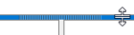
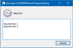
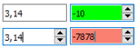

|
JKQtExtras
a library of useful Qt widgets and tools
|
|
JKQtExtras
a library of useful Qt widgets and tools
|
| Form Organization/Layout | ||
|---|---|---|

| JKQTEVisibleHandleSplitter | a QSplitter that has a really visible Splitter handle |
| JKQTEVerticalScrollArea | a scrollarea which shows only vertical scrollbars whenever possible (minimum widget size) and otherwise tries to maximize the size of the widget. | |
| Progress Indicators | ||
| JKQTEProgressListWidget | displays a list of items with an icon next to each which indicates the current task performed on the item (e.g. not started, in progress, success, failed, ...) | |
| JKQTEProgressListDialog | a dialog with a JKQTEProgressListWidget and a cancel button (optional) | |
| JKQTEModernProgressWidget | a modern progress indicator widget | |

| JKQTEModernProgressDialog | dialog, using JKQTEModernProgressWidget |
| Sliders ... | ||
| JKQTEColorSlider | a QSlider that allows to choose a color hue | |
| Labels, Image Views, ... | ||
| JKQTEColorSampler | a widget which display a color (sample) | |
| JKQTEStarRatingWidget | a rating widget which displays five stars where the user may select how many are selected | |
| Edit Fields | ||
| JKQTEEnhancedComboBox | this QComboox descendent with en hanced features (e.g. can be set to read-only, editingFinished() signal, ...) | |

| JKQTEDoubleEdit | this QLineEdit descendent implements a validating edit field that allows to enter floating point numbers with a possibly defined range |
| Buttons ... | ||
| JKQTEURLOpenToolButton | specialized QToolButton which takes the contents of its buddy as webpage adress (URL) and opens it in the system's standard application | |
| JKQTEDirectorySelectToolButton | specialized QToolButton which allows to select a directory and saves its path in the buddy | |
| JKQTEFileSelectToolButton | specialized QToolButton which allows to select a file and saves its path in the buddy | |
| JKQTEFileExecuteToolButton | specialized QToolButton which allows to open the file referenced by the buddy edit | |
| Menus, ... | ||
| JKQTERecentFilesMenu | a special QMenu that allows to manage a list of recently loaded files | |
| Data Models | ||
| JKQTECheckableStringListModel | a QStringListModel, which allows to check/uncheck each entry | |